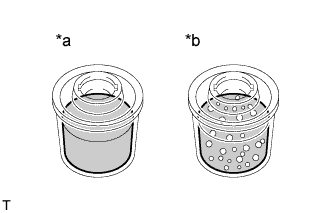
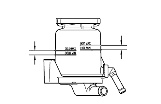
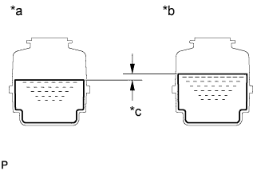
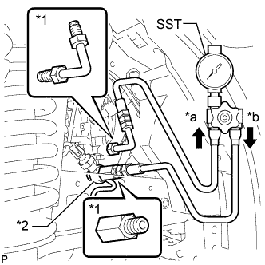
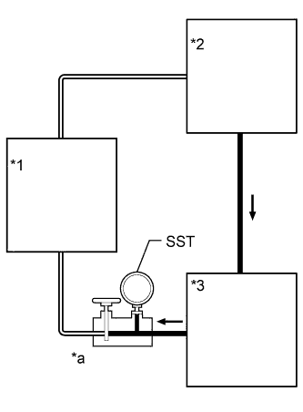
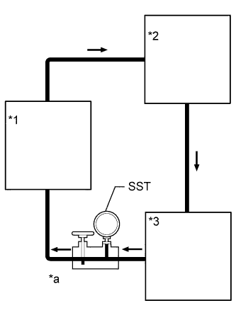
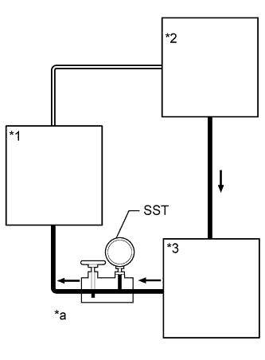

VANE PUMP > ON-VEHICLE INSPECTION |
| 1. INSPECT DRIVE BELT |
Visually check the belt for excessive wear, frayed cords, etc.
If any defect is found, replace the drive belt.
| 2. BLEED AIR FROM POWER STEERING SYSTEM |
Check the fluid level.
Jack up the front of the vehicle and support it with stands.
Turn the steering wheel.
With the engine stopped, turn the wheel slowly from lock to lock several times.
Lower the vehicle.
Start the engine.
Run the engine at idle for a few minutes.
Turn the steering wheel.
With the engine idling, turn the wheel to the left or right full lock position and keep it there for 2 to 3 seconds, then turn the wheel to the opposite full lock position and keep it there for 2 to 3 seconds.*1
Repeat *1 several times.
Stop the engine.
|  |
Check for foaming or emulsification.
| *a | CORRECT |
| *b | INCORRECT |
Check the fluid level.
| 3. CHECK POWER STEERING FLUID LEVEL |
|  |
Keep the vehicle horizontal.
With the engine stopped, check the fluid level in the reservoir.
If necessary, add fluid.
Start the engine and run it at idle.
Turn the steering wheel from lock to lock several times to raise the fluid temperature.
Check for foaming or emulsification.
| *a | CORRECT |
| *b | INCORRECT |
|  |
With the engine idling, measure the fluid level in the reservoir.
| *a | Engine Idling |
| *b | Engine Stopped |
| *c | 5 mm or less |
Stop the engine.
Wait a few minutes and remeasure the fluid level in the reservoir.
Check the fluid level.
| 4. CHECK STEERING FLUID PRESSURE |
Disconnect the pressure feed tube from the vane pump.
|  |
Connect SST as shown in the illustration below.
| *a | In |
| *b | Out |
| *1 | Attachment |
| *2 | Pressure Feed Tube |
Bleed air from the power steering system.
Start the engine and run it at idle.
Turn the steering wheel from lock to lock several times to raise the fluid temperature.
|  |
With the engine idling, close the valve of SST and observe the reading on SST.
| *1 | Power Steering Gear |
| *2 | Power Steering Fluid Reservoir |
| *3 | Power Steering Vane Pump |
| *a | Valve Closed |
|  |
With the engine idling, open the valve fully.
| *1 | Power Steering Gear |
| *2 | Power Steering Fluid Reservoir |
| *3 | Power Steering Vane Pump |
| *a | Valve Open |
Measure the fluid pressure at engine speeds of 1000 rpm and 3000 rpm.
|  |
With the engine idling and the valve fully open, turn the steering wheel left or right to the full lock position. Observe the reading on SST.
| *1 | Power Steering Gear (Lock Position) |
| *2 | Power Steering Fluid Reservoir |
| *3 | Power Steering Vane Pump |
| *a | Valve Open |
Disconnect SST.
Connect the pressure feed tube to the vane pump.
Bleed air from the power steering system.